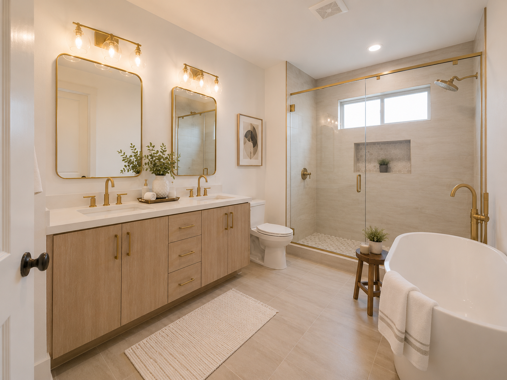
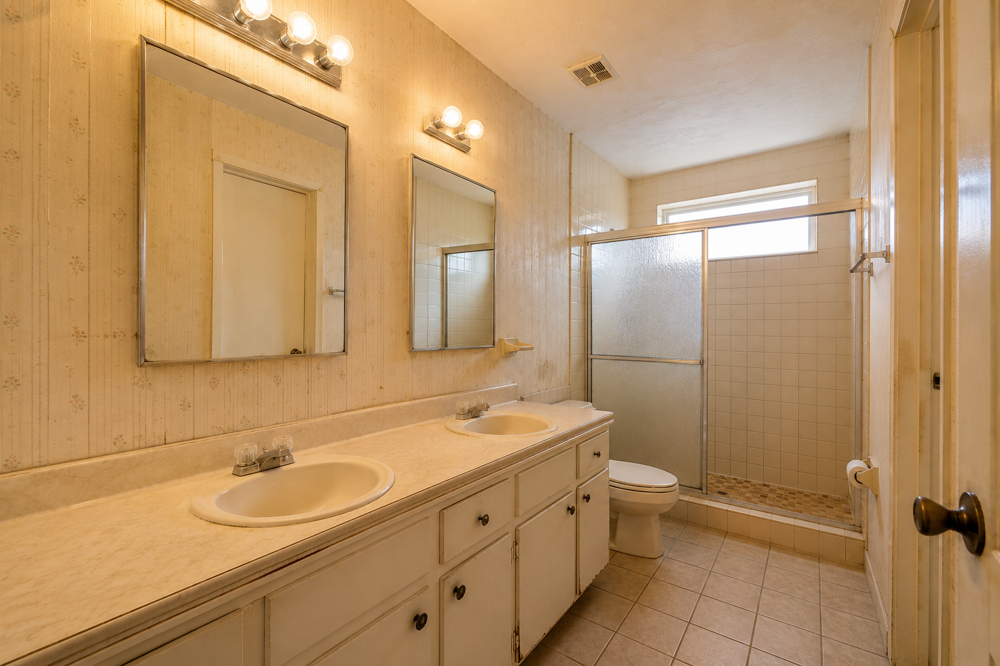
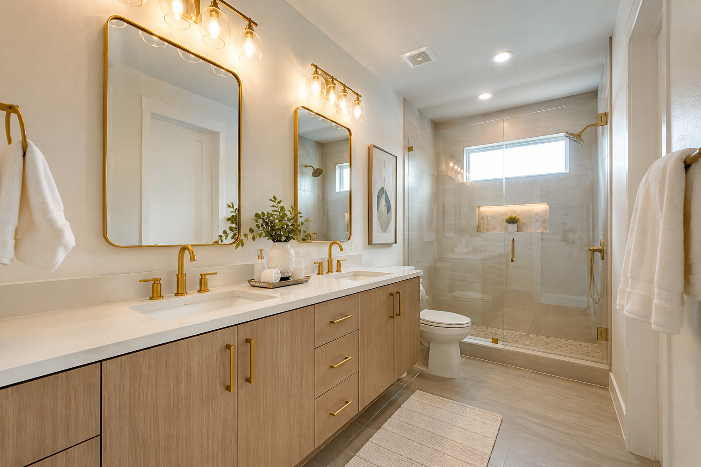
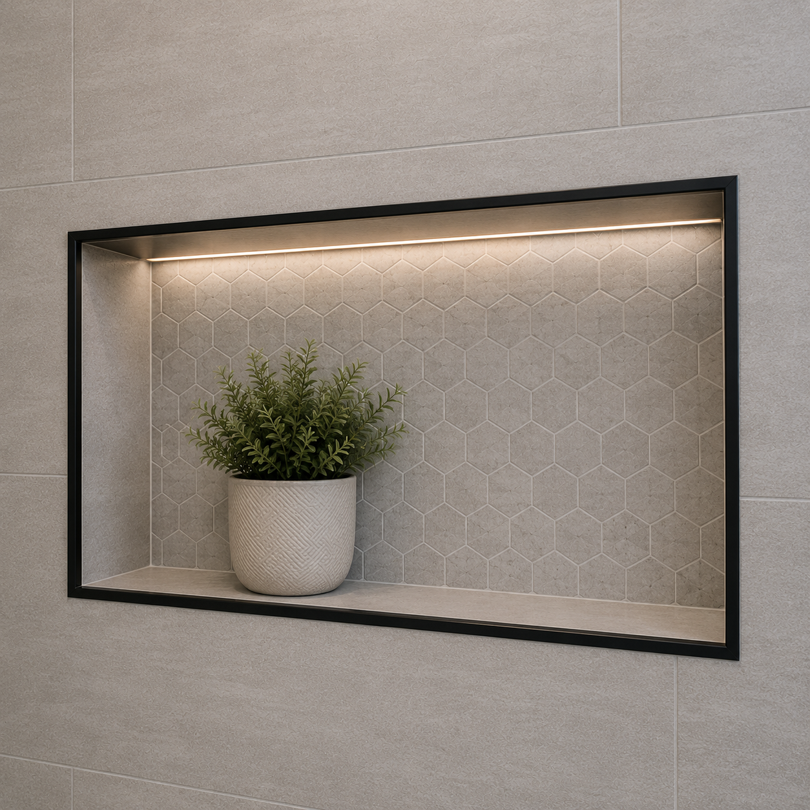
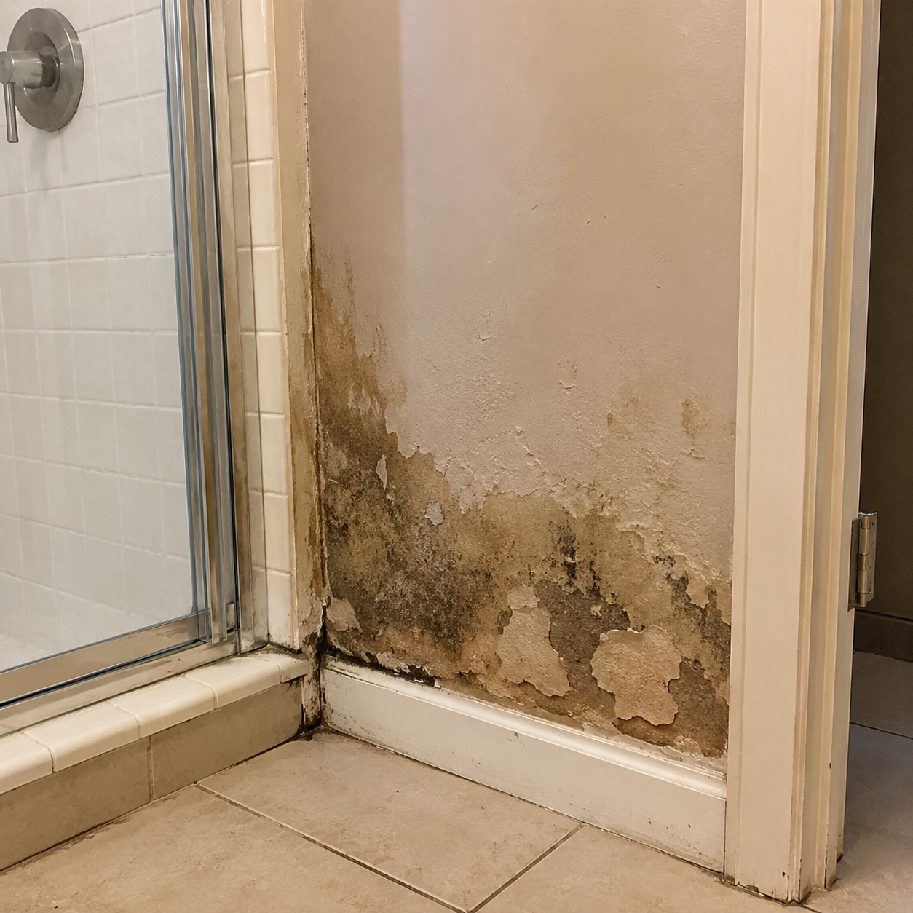
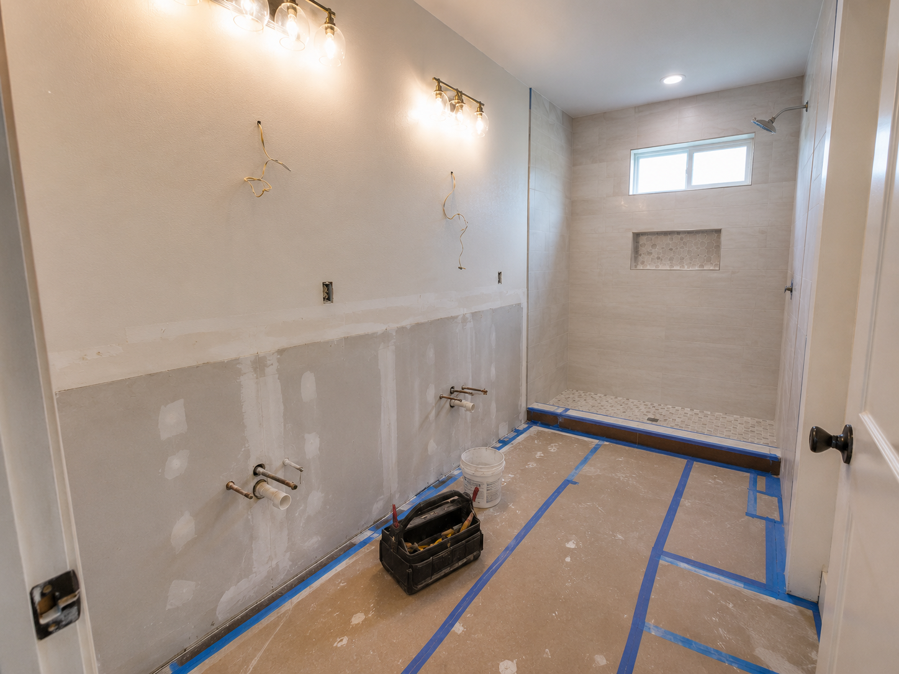
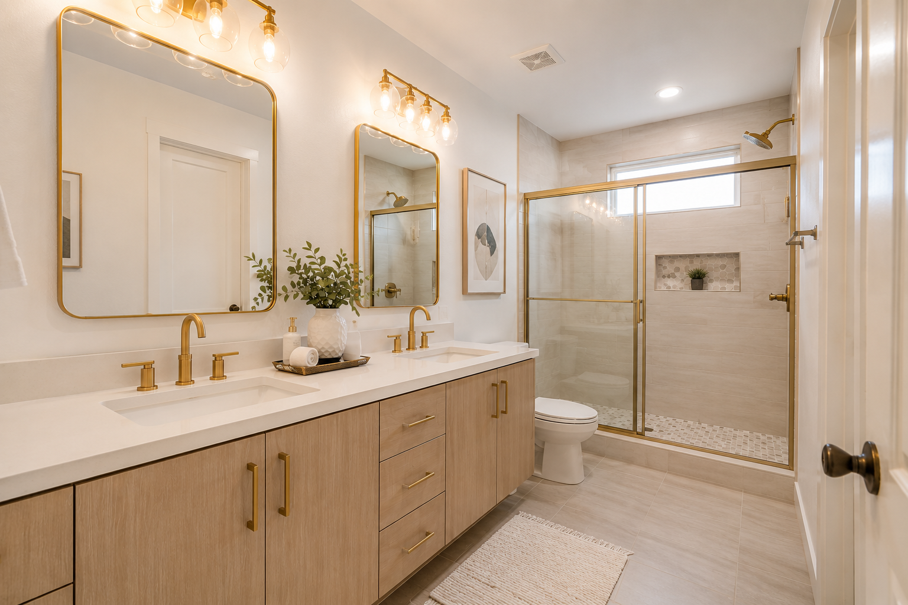

Blog / Bathroom Remodeling

If you are thinking about updating an old bathroom, replacing a shower, fixing moisture damage, or improving the look and function of your space, one of the first questions is usually: how much will it cost?
The honest answer is that bathroom remodel costs can vary widely. The final price depends on the size of the bathroom, the condition of the existing space, the materials you choose, whether the shower or tub is being replaced, the amount of tile work, drywall repair, moisture issues, plumbing or electrical changes, and the level of finish you want.
What affects the cost of a bathroom remodel?
The biggest cost factors are project scope and existing conditions. A bathroom that only needs cosmetic updates is very different from a bathroom that needs wall repair, shower changes, tile work, plumbing adjustments, or moisture-related improvements.
- Bathroom size and layout
- Condition of the existing walls, flooring, shower, tub, and vanity
- Tile, flooring, vanity, lighting, mirror, and fixture selections
- Shower remodel, tub replacement, or glass enclosure work
- Drywall repair, painting, trim, and finishing details
- Plumbing or electrical changes
- Moisture damage, ventilation issues, or prep work before finishing
Bathroom refresh vs. full bathroom remodel
A bathroom refresh may include paint, updated fixtures, a new vanity, mirror, lighting, flooring, or minor drywall repair. This type of project is usually more straightforward because the basic layout stays the same.
A full bathroom remodel may involve shower replacement, tub-to-shower conversion, tile work, new flooring, glass doors, plumbing or electrical updates, drywall repair, moisture correction, and more detailed finish work. Larger remodels require more planning because every finish decision affects the final result.
A bathroom remodel can completely change how the space feels
Many Tampa Bay bathrooms start with outdated tile, old vanities, poor lighting, worn finishes, or moisture-prone areas. With the right planning, even an older bathroom can become brighter, cleaner, easier to maintain, and more comfortable to use every day.

Outdated bathroom before remodeling

Finished bathroom remodel with updated fixtures
Want a clearer idea for your bathroom?
Text photos of your bathroom and your city to WBNextlevel. We can review the project type and discuss the next step.
Text 813-591-7560Materials and finish choices can change the budget
Material choices make a major difference in both cost and final appearance. Tile size, tile pattern, shower niche details, faucet style, vanity size, lighting, glass doors, flooring, and hardware can all change the budget. A simple finish package will cost less than a more detailed bathroom with custom-looking features and premium finishes.

Florida bathrooms need moisture-conscious planning
Bathrooms in Florida homes need extra attention to moisture, ventilation, paint quality, drywall condition, shower areas, and waterproofing details. Humidity can make poor preparation show up faster, especially around showers, tubs, trim, walls, and ceilings.
If there is water damage, soft drywall, peeling paint, or signs of moisture, it is better to address the problem before installing new finishes. Covering up moisture damage without proper repair can lead to bigger issues later.

How to plan your bathroom remodel budget
The best way to plan a bathroom remodel budget is to separate must-haves from nice-to-haves. Start with the problems you need to solve first, then decide which design upgrades matter most.
- Decide whether you need a refresh or a full remodel
- Keep the same layout if you want to reduce complexity
- Choose durable materials that make sense for Florida humidity
- Do not ignore water damage or drywall problems
- Send photos before requesting an estimate
- Be clear about your goals: appearance, function, storage, durability, or resale

Common bathroom remodeling mistakes to avoid
- Choosing only by the lowest price
- Ignoring moisture or ventilation problems
- Not planning lighting and storage
- Choosing materials that are hard to maintain
- Skipping drywall, paint, or surface preparation
- Changing decisions after work has started
- Not communicating the full project scope clearly
Questions to ask before hiring a bathroom remodeling contractor
- Have you worked on bathrooms in Florida homes?
- Can I send photos before scheduling the next step?
- What is included in the estimate?
- How do you handle drywall or moisture damage?
- Which finishes are easier to maintain?
- How will communication work during the project?
Helpful related pages
For service details, visit our bathroom remodeling page. WBNextlevel also serves Tampa, Riverview, Brandon, Apollo Beach, Wesley Chapel, St. Petersburg, Clearwater, and nearby Tampa Bay communities.
Bathroom remodeling FAQs
What is the most expensive part of a bathroom remodel?
Shower or tub work, tile installation, plumbing changes, moisture repair, and premium finish selections are often major cost drivers.
Can I remodel a bathroom in stages?
Sometimes, yes. A smaller refresh can focus on paint, vanity, lighting, fixtures, or flooring first. A full remodel is usually better when the shower, walls, or moisture issues need attention.
Should drywall be replaced during a bathroom remodel?
Not always. Small damaged areas may be repaired, but drywall with moisture damage, soft spots, or mold concerns may need replacement before finishing.
What flooring works best in a Florida bathroom?
Water-resistant and easy-clean flooring is important. Tile and other moisture-conscious options are common choices for Florida bathrooms.
Can I send photos before requesting an estimate?
Yes. Photos help WBNextlevel understand the current bathroom, visible damage, layout, and type of finish you want.

Planning a bathroom remodel in Tampa Bay?
Text WBNextlevel at 813-591-7560 or request a free estimate online. Send photos of your bathroom, your city, and a short description of what you want to change.
Request a Free EstimateText Us